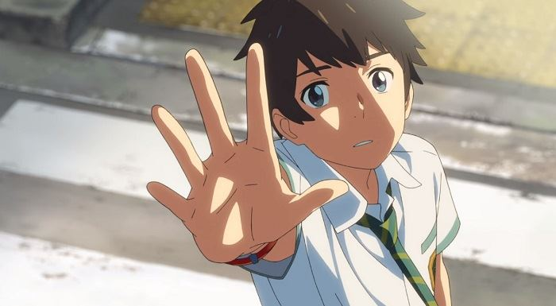
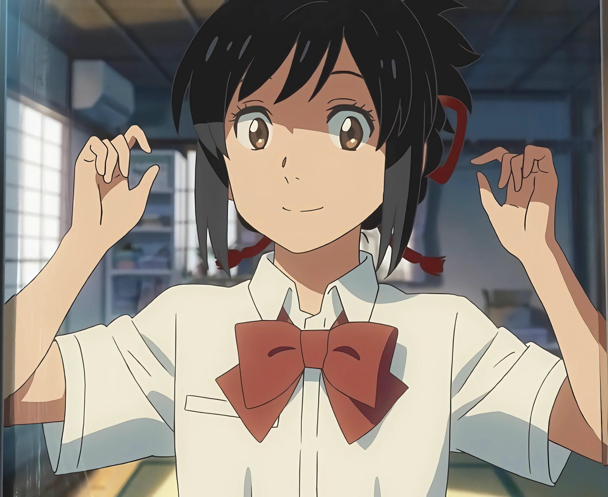
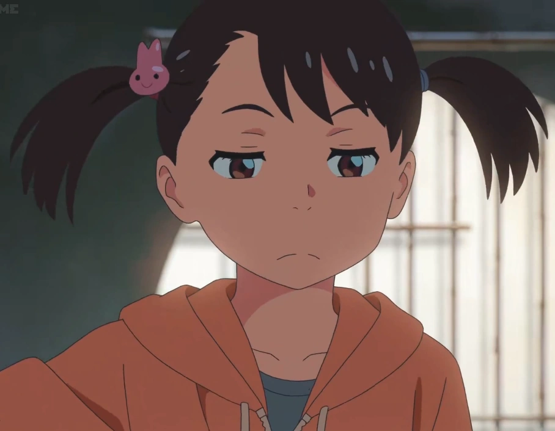
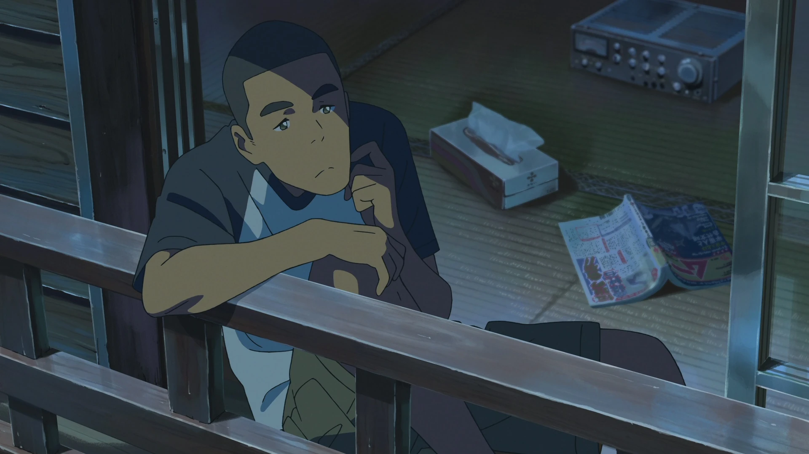
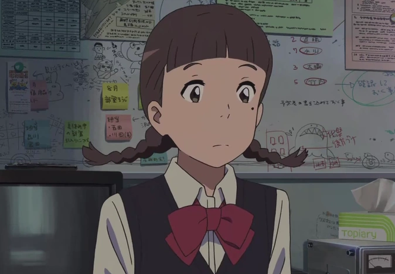
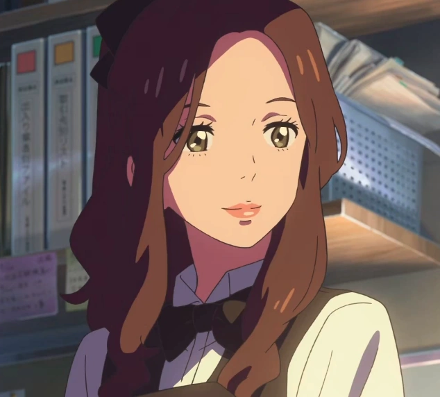
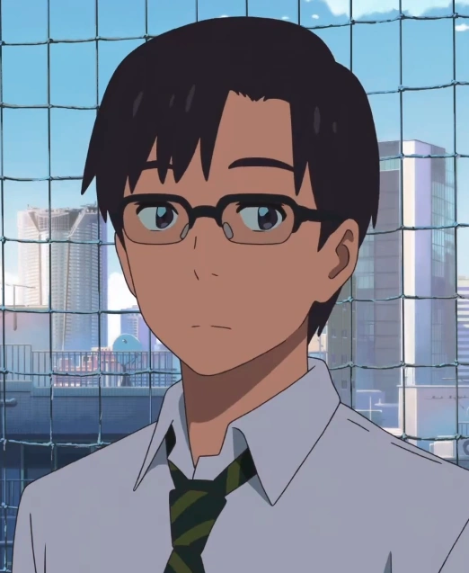
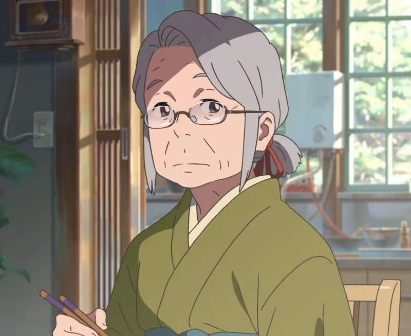
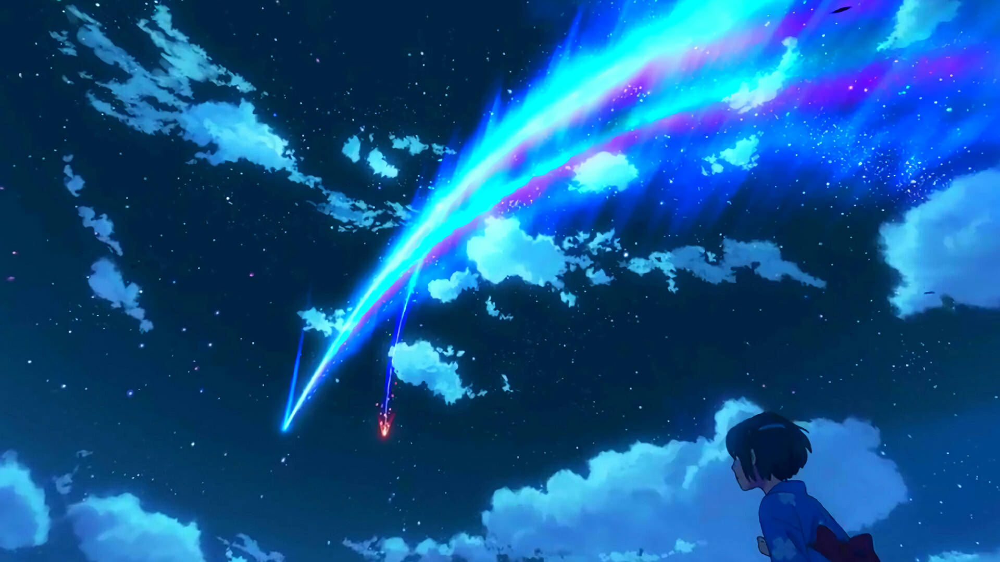

Duas vidas que nunca deveriam se cruzar
Taki vive em Tóquio, enquanto Mitsuha sonha em deixar a pequena cidade onde mora e conhecer uma vida completamente diferente. Sem entender como ou por quê, os dois começam a acordar no corpo um do outro, vivendo partes da rotina de alguém que nunca conheceram.
O que começa como uma situação estranha e até divertida logo se transforma em algo muito maior. Aos poucos, eles percebem que existe uma ligação entre suas vidas que nenhum dos dois consegue explicar.
É justamente quando essa conexão começa a fazer sentido que Your Name deixa de ser apenas uma história curiosa e se torna o tipo de filme que você precisa assistir para entender por que tanta gente nunca esqueceu dele.

As pessoas por trás dessa história
Entre Tóquio e Itomori, cada pessoa deixa uma marca em uma história onde encontros podem significar muito mais do que parecem.

Taki Tachibana
Taki é um estudante que vive em Tóquio, cercado pela agitação da cidade, pelos estudos, pelos amigos e pelo trabalho em um restaurante.
Sua rotina muda quando acontecimentos impossíveis começam a fazer parte de seus dias. Determinado e impulsivo, Taki tenta compreender uma conexão que parece desafiar distância, memória e até aquilo que acredita ser possível.
Mitsuha Miyamizu
Mitsuha vive em Itomori, uma pequena cidade cercada por montanhas e tradições. Apesar da beleza do lugar, ela sonha em conhecer Tóquio e experimentar uma vida completamente diferente.
Entre as tradições de sua família e o desejo de conhecer outro mundo, Mitsuha se torna parte de algo que ela mesma não consegue explicar.

Nem todo encontro precisa estar no centro da história
Passe o mouse sobre cada personagem para conhecê-lo melhor.

Yotsuha Miyamizu
Irmã mais nova de Mitsuha. Espontânea e observadora, participa da rotina e das tradições da família Miyamizu.

Tessie
Um dos amigos mais próximos de Mitsuha. Descontraído e curioso, demonstra grande lealdade quando seus amigos realmente precisam dele.

Sayaka Natori
Amiga de Mitsuha e Tessie. Reservada e sensata, ela completa o pequeno grupo de amigos de Itomori.

Miki Okudera
Colega de trabalho de Taki. Confiante e observadora, ela ocupa um lugar importante em sua rotina em Tóquio.

Tsukasa Fujii
Um dos amigos próximos de Taki. Ele percebe quando o comportamento do amigo começa a parecer diferente do habitual.

Hitoha Miyamizu
Avó de Mitsuha e Yotsuha. Ela preserva as tradições da família e representa uma forte ligação com memória e passado.
Há muito mais escondido nessa história
Your Name não chama atenção apenas pela história. Lugares, cores, música e pequenos detalhes ajudam a transformar o filme em uma experiência difícil de esquecer.
E se alguns dos lugares de Your Name pudessem ser visitados?
Embora Itomori seja uma cidade fictícia, Your Name mistura imaginação com lugares que existem no Japão. Diversos cenários lembram locais reais e ajudam a deixar a experiência ainda mais marcante.
Esse cuidado com o espaço e com a ambientação faz o filme parecer mais vivo e próximo da realidade, como se aquele universo realmente pudesse existir em algum lugar.
E essa é apenas a primeira das curiosidades que esse universo esconde...
Quando imagem, trilha e emoção parecem falar a mesma língua
Um dos maiores destaques de Your Name está na forma como a música e os visuais trabalham juntos. O céu, o cometa, as luzes da cidade e a trilha criam uma atmosfera que faz até os momentos mais simples parecerem grandiosos.
Se você quiser sentir um pouco dessa identidade visual e emocional antes mesmo de assistir, vale a pena ver o trailer.
▶ Veja aqui o trailer do filme ↗
A história termina na tela, mas existe muito por trás dela.
Conheça um pouco mais sobre a produção, a equipe e os detalhes técnicos que ajudaram a construir Your Name.
Por trás de Your Name →Algumas histórias continuam mesmo depois dos créditos.
Agora queremos saber o que ficou com você. Pode ser uma impressão sobre o site, uma lembrança de Your Name ou simplesmente aquilo que despertou sua curiosidade.
Às vezes, uma pequena opinião também faz parte da história.